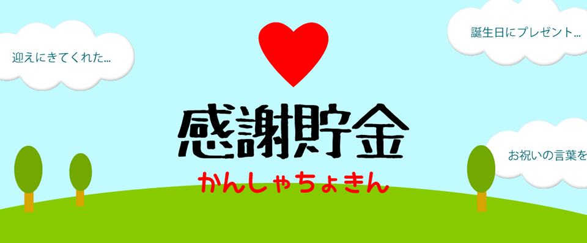
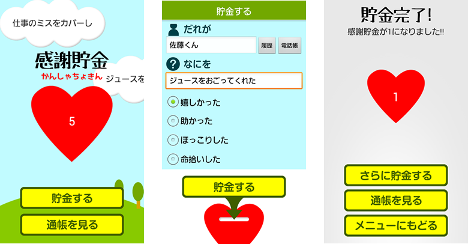
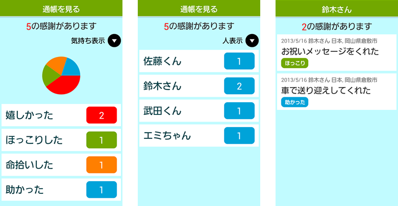
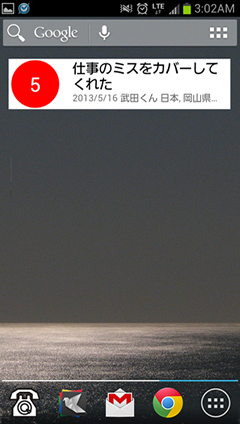

「感謝貯金」感謝の気持ちを貯金していくアプリ
年を重ねるたびに深まる、人への感謝。
親切にしてもらったり、助けてもらったり。
でも、すぐに忘れてしまう感謝の気持ち。
「感謝貯金」は、感謝の気持ちを貯金していくアプリです。
たまった貯金をどうやって恩返ししていくかはあなた次第。
登録された感謝は、ホーム画面にウィジェット表示。
たくさん感謝を貯金して、眺めてほっこりしましょう。
貯金（記録）する
ちょっとしたことでもOKです。まずは感謝を貯金（記録）していましょう。
気持ちの表現「嬉しかった」「助かった」なども登録できます。
登録された感謝は、メニュー画面でフワフワ雲にランダム表示されます。

通帳（感謝の記録）を見る
通帳（感謝の記録）には、「気持ち表示」と「人表示」があります。
この通帳を見ると、自分がどれだけ周りの方に支えられているかが分かりますね。

ウィジェットで感謝を忘れずに
それでもやっぱり忘れてしまう感謝の気持ち。
大丈夫です。ウィジェット表示で時々感謝の気持ちに気付くことができます。
